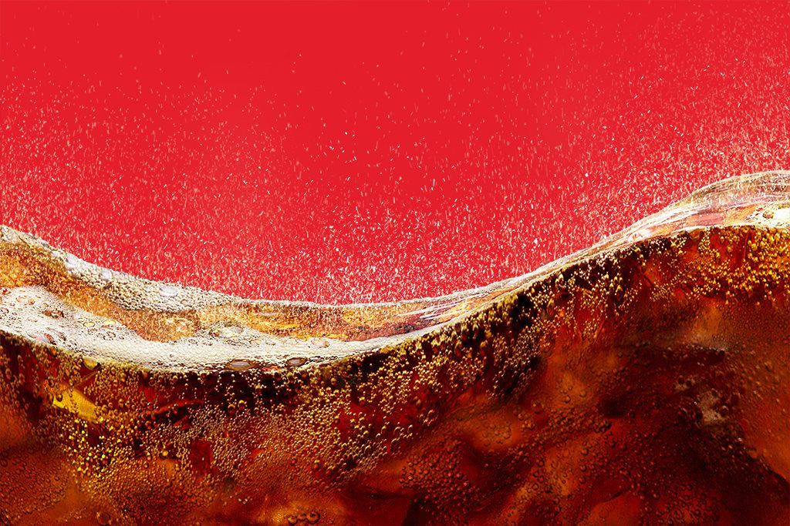
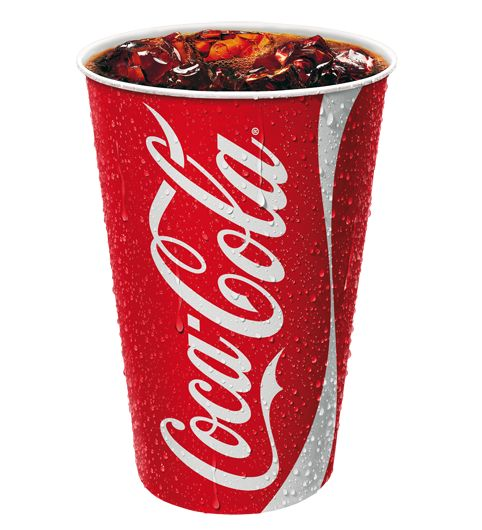

El placer de una bebida bien fría
- Coca-Cola nació en 1886 en Atlanta, Estados Unidos, y hoy se disfruta en casi todos los países del mundo. Más que una bebida, se volvió parte de reuniones familiares, partidos y celebraciones.

Para disfrutarla mejor, sírvela bien fría y con hielo. La botella de vidrio, la lata y la presentación familiar cambian la forma de compartirla, pero la idea es la misma: un momento para detenerse y disfrutar con otros.
En esta web encontrarás una galería con imágenes del producto y videos relacionados. Este sitio es un trabajo académico y no representa a la empresa.